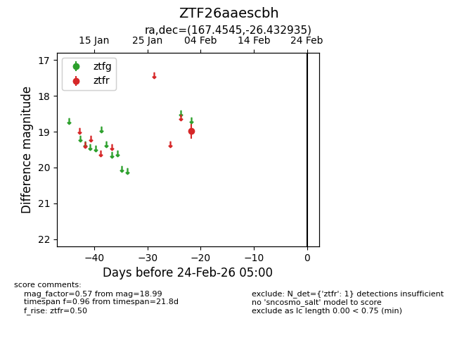
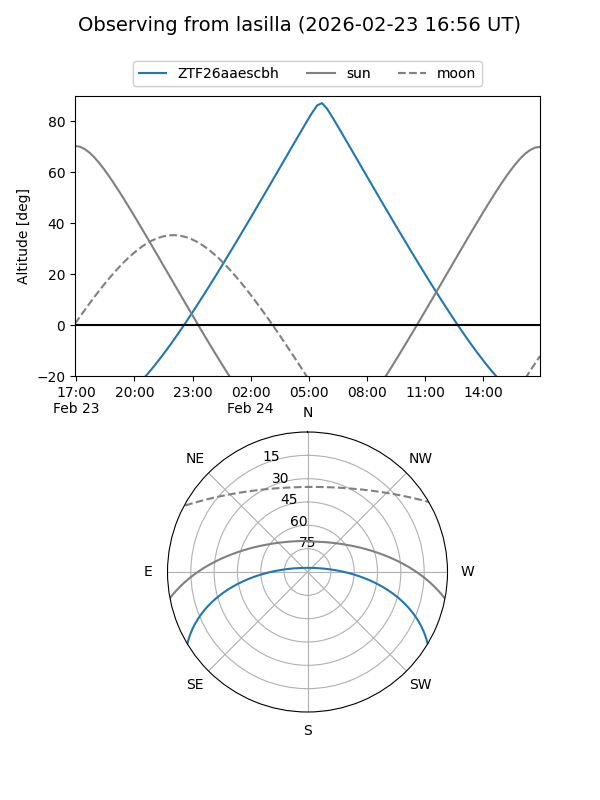
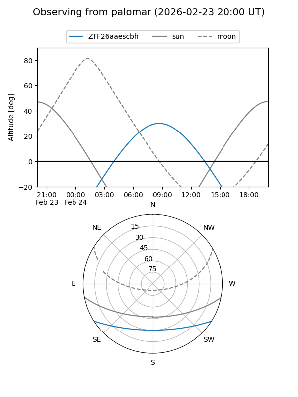

ZTF26aaescbh
Target ZTF26aaescbh at 2026-02-24 09:08
Aliases and brokers:
FINK: link
Lasair: link
ALeRCE: link
alt names
ZTF26aaescbh (ztf,fink_ztf)
Coordinates:
equatorial (ra, dec) = 167.4545,-26.43294
equatorial (HMS+DMS) = 11:09:49.08,-26:25:58.57
galactic (l, b) = (276.2675,+31.12439)
Flags:
Photometry:
last ztfr=18.99
1 ztfr detections
Lightcurve

Visibility


Additional plots